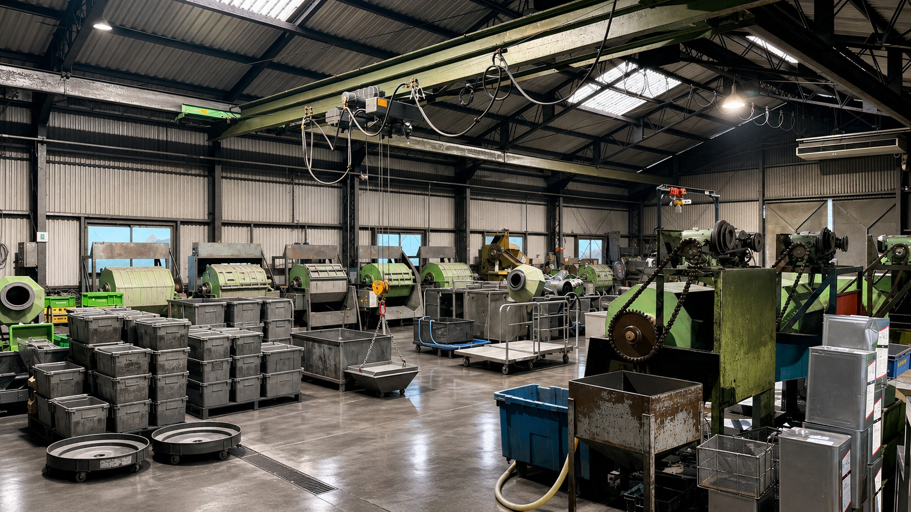

01
金属バレル加工
メーカーなどで成形・熱処理された金属部品に対し、回転式・振動式のバレル機を用いて、バリ取り、スケール除去、脱脂、洗浄、光沢仕上げなどを行います。
株式会社サンエイは、東大阪で50年以上にわたり金属バレル加工に携わってきました。バリ取り、スケール除去、脱脂、光沢仕上げ、メッキ前の下地処理、防錆まで、部品の材質や形状、その後の工程に合わせて表面を整えます。

メーカーなどで成形・熱処理された金属部品に対し、回転式・振動式のバレル機を用いて、バリ取り、スケール除去、脱脂、洗浄、光沢仕上げなどを行います。
品物の材質や形状、求める仕上がりに応じて研磨メディアとコンパウンドの組み合わせを調整し、油分や汚れ、焼けを取り除きながら表面を整えます。
加工前後の状態や、代表的な処理内容を写真とともに紹介します。
切断や加工後に残るバリ、焼き入れ後の焦げやスケールなどを除去し、後工程へ進みやすい表面状態へ整えます。
付着した油分や汚れを取り除き、素材表面を整えながら光沢を引き出します。サンエイが特に強みとしている加工です。
メッキが付きやすい状態への下地処理や、加工後の錆を抑える防錆処理にも対応します。
バレル加工の可否、仕上げ方法、前後工程とのつながりなど、まずはご相談ください。図面や品物の写真、材質、数量、希望する仕上がりが分かれば、より具体的に確認できます。
お問い合わせ